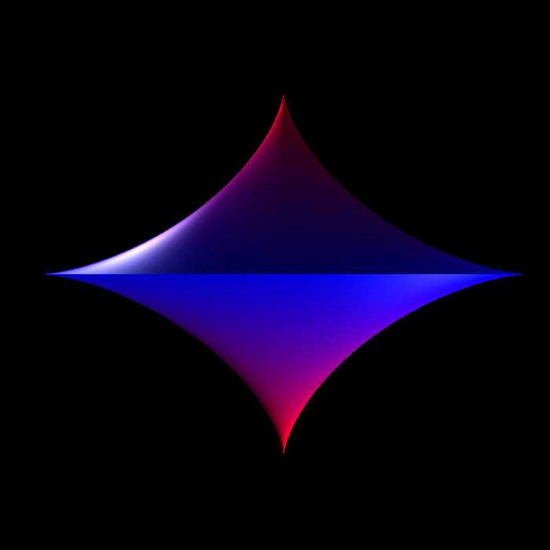
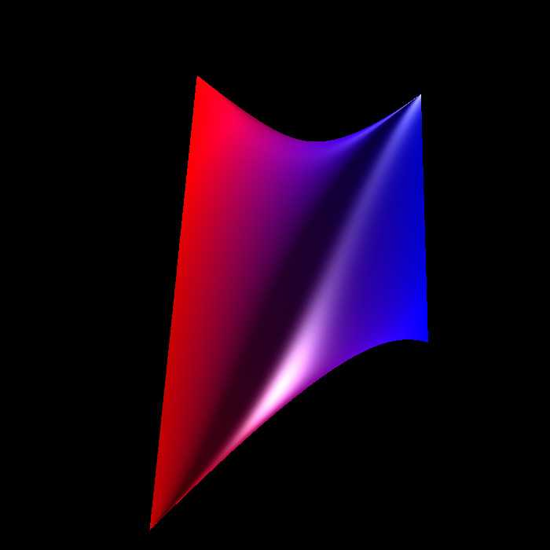
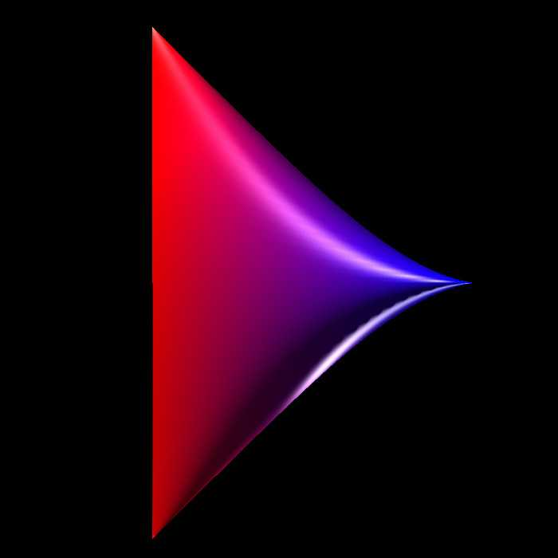
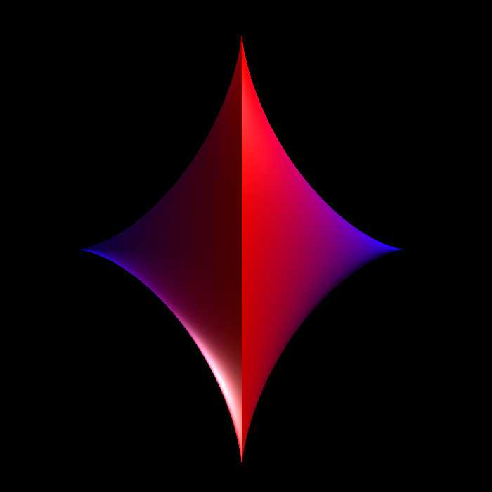
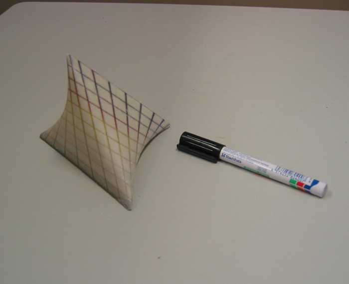

Tetrahedral Ellipse
Graphics by
Paul Bourke
October 2004
Attributed to Roger Bagula
x = (1 - v) cos(u)
y = (1 + v) sin(u)
z = v
-1 <= v <= 1, -pi <= u <= pi




Solid
Created using the ZCorp Z406 colour rapid prototyping machine.
